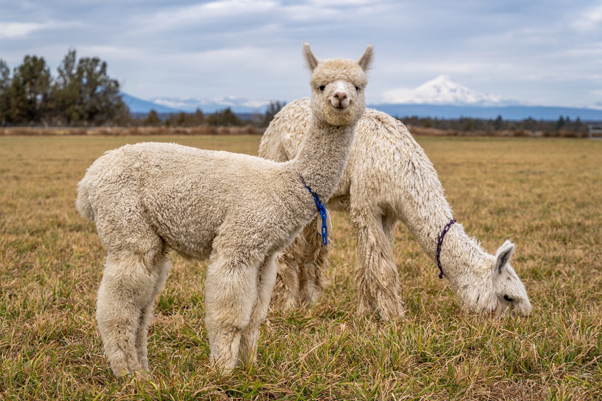
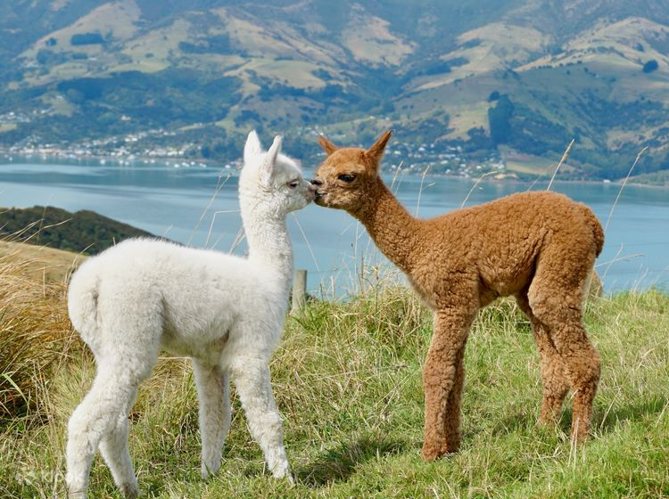
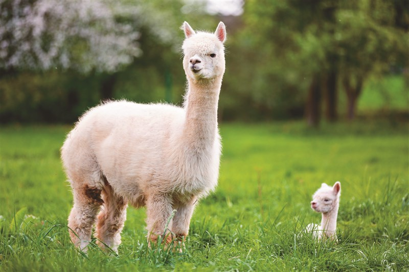
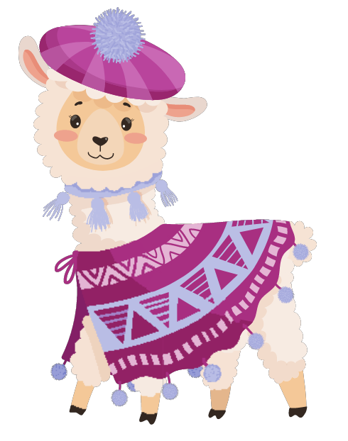
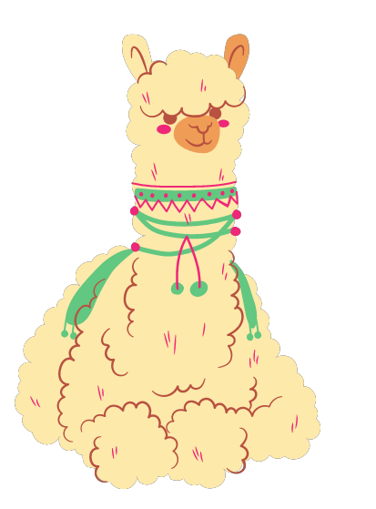

羊駝 Llama

羊駝

羊駝

羊駝
Previous
Next
性格：
羊駝的性格通常被描述為溫和而溫順。它們傾
向於以冷靜和沉著的方式應對不同的情況。羊
駝被認為是相當溫和的動物，很少會主動攻擊
或表現出挑釁的行為。羊駝是社會性動物，喜
歡與同伴一起生活。它們形成群體，並通過合
作和協調來維持群體的穩定和安全。在羊駝群
中，個體之間的互動往往是和平友好的，並且
展示出互助和合作的行為。此外，羊駝也展現
出對自己環境的適應能力和智慧。它們在高山
地區的崎嶇環境中，表現出良好的警覺性和觀
察力，以應對潛在的危險和威脅。然而，雖然
羊駝通常表現出溫和和平的性格，但它們也有
自己的領域和個體之間的階級關係。在一些情
況下，雄性之間可能發生輕微的爭鬥，以確立
自己的地位和權威。總體而言，羊駝的性格特
徵包括溫和、友好、合作和善於適應。這些特
點使得它們能夠在高山環境中建立和維持穩定
的社會結構，並有效地應對挑戰和變化。

食物：
羊駝是草食性動物，主要以高山地區的植物為
食。它們的食物來源包括各種高山草、草本植
物、苔蘚和低矮的灌木等。在高山地區，羊駝
需要應對環境中的極端氣候和有限的植物覆蓋
。它們具有特殊的咀嚼和消化系統，能夠有效
地提取養分和水分。羊駝的口部結構適應於啃
食堅硬的植物，並且有能力消化含有纖維和纖
維素的食物。羊駝可以靠著吃草來獲取所需的
營養，包括碳水化合物、蛋白質和脂肪。它們
通常在白天活動，慢慢地啃食周圍的植物，並
花費很長的時間來咀嚼和消化食物。由於高山
地區的植物覆蓋有限，羊駝需要適應不同季節
和地區的變化。它們可能會隨著季節的變化移
動到不同的地區，以尋找更豐富的食物來源。
總體而言，羊駝主要以高山地區的草、草本植
物和低矮的灌木為食。它們具有特殊的咀嚼和
消化能力，能夠適應極端環境下的有限食物供
應。這種食性使得羊駝在高山地區能夠找到所
需的營養，並維持其生活和生存。
外表特徵＆外觀：
羊駝（也稱為高山駱駝）是一種獨特的動物，
具有與傳統駱駝相異的外表特徵和外觀。羊駝
的身型相對較小，體長通常在1.2至1.8米之間
，肩高約0.9至1.5米，體重大約在40至140公
斤之間。羊駝的毛色通常呈現灰褐色或灰白色
，這使它們更容易在山地和岩石環境中融入，
提供了有效的保護。它們的毛皮濃密而柔軟，
適應高山地區的寒冷氣候。羊駝有一對相對較
小的峰，與傳統駱駝的峰相比較不明顯。這些
峰主要由脂肪組成，能夠提供能量和營養儲備
，以應對高山環境中的食物缺乏和極端天氣。
羊駝的頭部相對小而圓，嘴部具有特殊的適應
性。它們有長而尖銳的上下門牙，可以輕鬆地
咬斷高山植物的堅硬葉子和莖幹。羊駝的四肢
強壯且靈活，它們具有非常好的平衡能力，能
夠在崎嶇不平的山地上穩定行走。它們的蹄子
有厚實的底部，有助於在岩石和不穩定的地面
上獲得更好的抓地力。總體而言，羊駝的外表
特徵和外觀包括相對較小的身型、灰褐色或灰
白色的毛色、較小的峰、小而圓的頭部、適應
性嘴部和強壯的四肢。這些特徵使得羊駝能夠
適應並生活在崎嶇的高山環境中。

分佈＆數量：
羊駝主要分布在亞洲和歐洲的高山地區，尤其
是喜馬拉雅山脈、帕米爾高原、阿爾泰山脈和
阿爾卑斯山等地。它們是高海拔地區的特有物
種，對極端的氣候和崎嶇的地形有著驚人的適
應能力。關於羊駝的數量，由於它們主要生活
在偏遠和嚴酷的高山地區，確切的數據往往難
以確定。然而，根據估計，全球羊駝的總數量
大約在60,000至70,000頭之間。然而，羊駝
的數量在不同地區可能存在差異。一些地區的
羊駝種群數量相對較多，並且得到一定程度的
保護，但其他地區的種群數量則較少且面臨著
威脅。過度的狩獵、棲息地的喪失、氣候變化
和人類活動的干擾是對羊駝數量的主要威脅因
素。因此，針對這些問題的保護和管理措施對
於維護羊駝的數量和分布至關重要。總體而言
，羊駝主要分布在亞洲和歐洲的高山地區，其
總數量大約在60,000至70,000頭之間。保護
羊駝及其棲息地的努力對於確保它們的分布和
數量能夠持續繁衍是至關重要的。
生活型態＆習性：
羊駝是群居的動物，它們通常形成由數十到數
百頭個體組成的小型群體。這些群體中有明確
的社會結構，通常由一隻成年雄性領導，並由
幾隻成年雌性和它們的後代組成。羊駝的生活
型態與其所處的高山環境密切相關。它們適應
於高海拔地區，善於在崎嶇的山地和岩石地形
中行走。由於這些地區的食物供應有限，羊駝
經常需要遷徙以尋找更豐富的食物和水源。羊
駝具有出色的適應能力，能夠在極端的氣候條
件下生存。它們能夠忍受寒冷的溫度、高海拔
的低氧環境和強風等不利因素。此外，羊駝還
擁有特殊的體質結構，使其能夠有效地保持體
溫並減少水分的流失。羊駝通常在白天活動，
並在清晨和黃昏時進行食物搜尋。它們以草、
草本植物、苔蘚和低矮的灌木為食，透過慢慢
地啃食和充分咀嚼來獲得營養。在食物供應不
足的時候，羊駝可以利用其體內儲存的脂肪和
水分來維持生存。羊駝在群體中展示出合作和
互助的行為，特別是在面對威脅和困難時。它
們彼此之間會互相保護，共同應對捕食者的威
脅。此外，羊駝還具有良好的警覺性和觀察力
，能夠及時察覺潛在的危險並采取適當的反應
。總的來說，羊駝的生活型態和習性適應了其
高山環境，包括群居、適應遷徙、耐寒性和食
物的選擇。這些特點使得羊駝能夠在嚴苛的高
山地區中生存和繁衍。
壽命：
羊駝的壽命通常在15至20年左右。